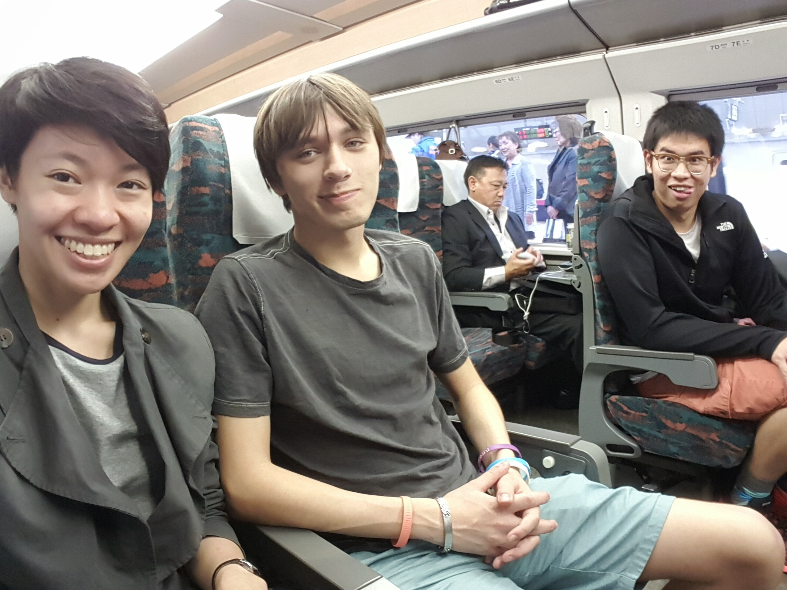
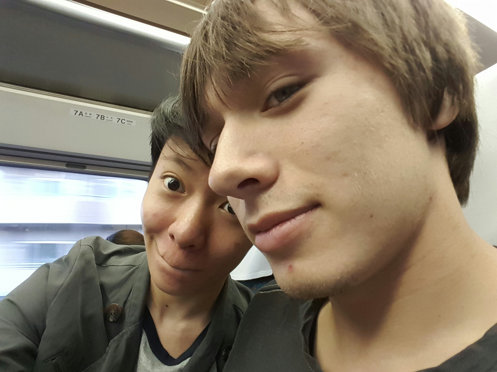
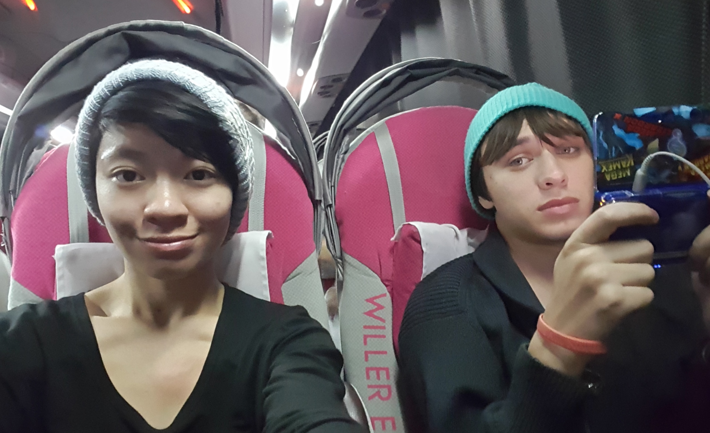
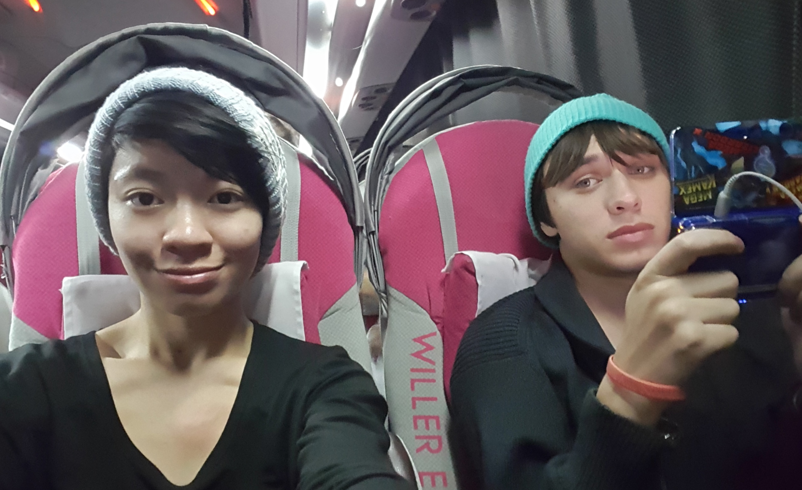

Miyagizao Fox Park.
Mindy: The plan was to stop by Alex's dorms after class to drop off my textbooks and school supplies and compile our things for the weekend before heading out with Kevin to Shinjuku Station for our bus departure at 2:40. However, the day started out a lot rougher than we had expected. After running in circles asking the random passerby, policeman, and business person for directions to the Willer Express bus stop, we finally made it to the Sumitomo Building just as the bus was pulling out of the parking lot. Alex and I were both salty and dejected, but I was convinced on going to Sendai that day because our friend, Kevin told me that I could hold a baby fox for 300 yen. We headed over to Tokyo Station to buy our Shinkansen tickets [my wallet cries to this day] and head up to Sendai.
 Our Airbnb host picked us up from the station after our dinner and also drove us to the Fox Park the next day. I hadn't realized how beautiful the sights were around Sendai until then with the beach and the mountains all around. We arrived right before the park's opening hour at 9 a.m., the fox park itself was a hidden gem that even our host didn't hear about until a previous guest asked to be taken there. It's split up into three sections. There's the souvenir shop which is also the entrance gate, a small petting zoo type area with foxes, sheep, horses, rabbits and other animals, and the main open park area where something around 200 foxes roam and interact with guests.


Inside the petting zoo type area, there were two foxes, Nori and Goro that you could pet but not hold. But since hearing that you could actually get to hold a fox, we were eager to try it. After waiting for the staff to finish their morning duties, we were able to hold Kanta! The three of us were able to snuggle him for about three minutes each. Alex and Kevin also wanted to hold the rabbits they had. Though the price was cheaper, the park staff didn't mind letting the guests hold the rabbits for longer than the advertised two minutes.


In the park area, we wandered along the pathways and were able to get surprisingly close to the foxes! It was exciting how close they let us get but I suppose by now humans are just annoying shutter sounds. I actually left my bag down for a bit to take photos of Alex tossing food for the foxes but one got really curious and started nosing the duffle right by my feet! It was cute though, so I can't say I minded much. And though the foxes had so much space, a large majority were lazing about and napping. I can see why there are so many stories about foxes in Japanese history with their expressive faces, adorableness, and sneaky antics.


Another cute thing with sneaky antics is Alex though.


By 1 p.m. we were done with the fox park and took a taxi to the station just before Sendai where we got a super delicious lunch and took the subway to Sendai where we wandered around the city for a few hours. We were able to catch our second half of the round trip bus ticket we bought though! By the time we arrived back to Shinjuku, it was late enough to catch the first trains.
 
